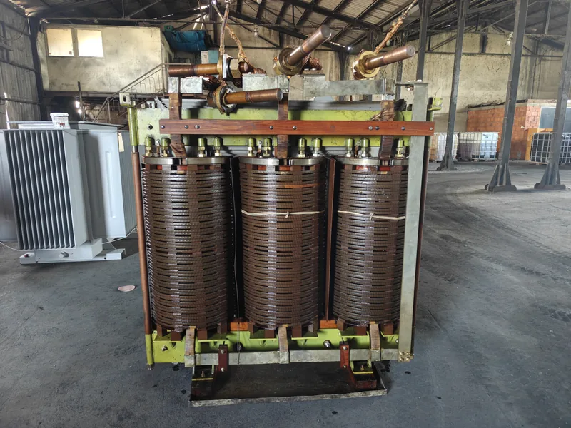

Vrste transformatora
Dvonamotajni, tronamotajni i višenamotajni energetski transformatori, kao i specijalni transformatori.
Remont energetskih transformatora i transformatorskih stanica obavljamo nakon detaljnog merenja i ispitivanja transformatora dovezenog u radionicu.
Zamenski transformator tokom remonta
Dvonamotajni, tronamotajni i višenamotajni energetski transformatori, kao i specijalni transformatori.
Dve ili više sprega u jednom transformatoru. Regulacija napona pod opterećenjem, sa ručnim ili automatskim upravljanjem.
Bez obzira na vrstu bakarnog namotaja: lak žica, profil ili folija.